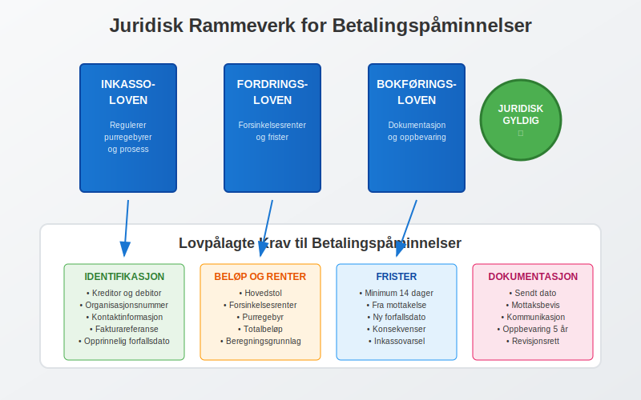
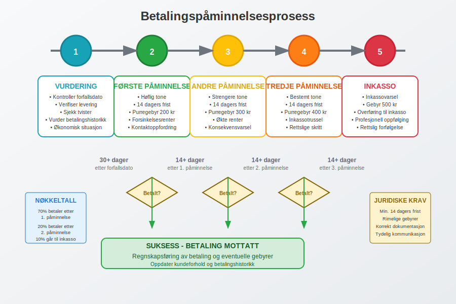
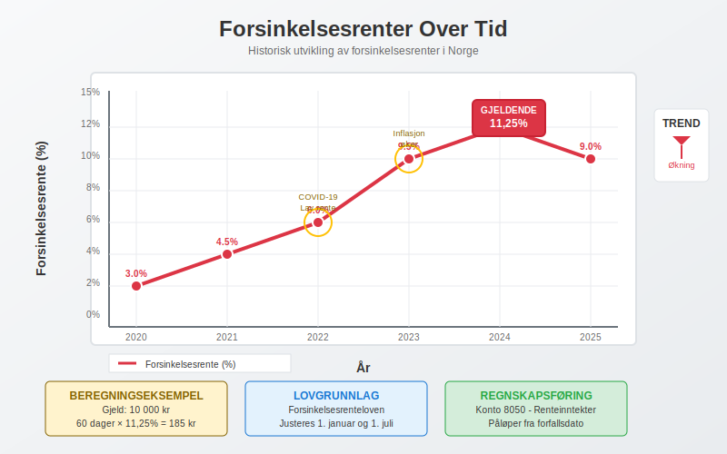
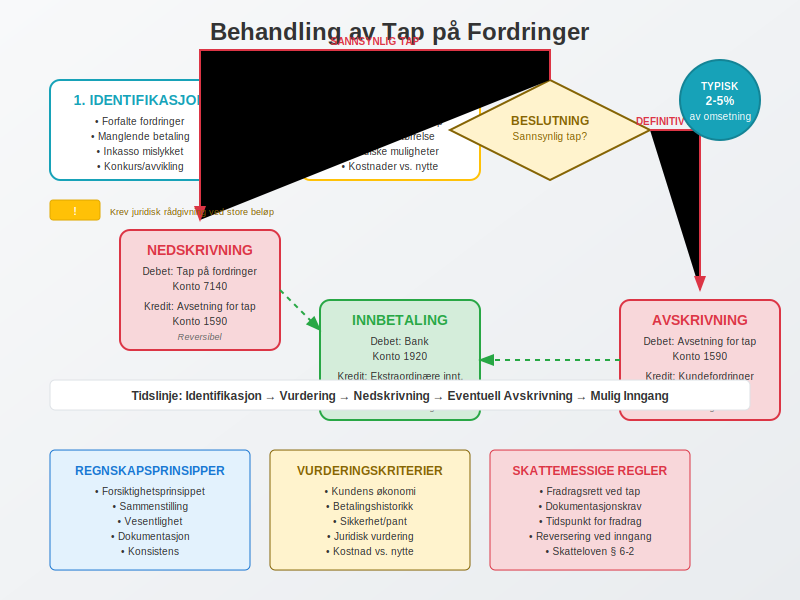

En betalingspåmminelse er en formell oppfordring til betaling av forfalt gjeld som sendes til en debitor som ikke har betalt innen forfallsdato. Dette er et viktig verktøy i kundeoppfølging og regnskapsstyring som sikrer bedriftens betalingsevne og kontantstrøm.
For mer informasjon om purring og purregebyr, se Hva er purring og purregebyr.
Betalingspåminnelser er en spesifikk del av den bredere betalingsoppfordringsprosessen, som omfatter hele spekteret av tiltak for å kreve inn utestående betalinger fra kunder.
Juridiske Grunnlag for Betalingspåminnelser
I Norge er betalingspåminnelser regulert av fordringslovgivningen og inkassoloven. En betalingspåminnelse er det første steget i den formelle inkassoprosessen og må oppfylle visse lovkrav for å være gyldig.

Lovpålagte Krav til Betalingspåminnelser
For at en betalingspåmminelse skal være juridisk gyldig, må den inneholde følgende elementer:
- Tydelig identifikasjon av kreditor og debitor
- Spesifikasjon av gjelden med referanse til opprinnelig faktura
- Forfalt beløp inkludert eventuelle renter
- Ny betalingsfrist (minimum 14 dager fra mottakelse)
- Konsekvenser ved manglende betaling
- Purregebyr som er rimelig og forholdsmessig (se detaljer om purring og purregebyr)
Prosessen for Betalingspåminnelser
Betalingspåminnelsesprosessen følger en strukturert tilnærming som sikrer både juridisk gyldighet og effektiv kundeoppfølging.

Trinn 1: Vurdering av Forfalt Gjeld
Før en betalingspåminnelse sendes, må bedriften:
- Kontrollere at fakturaen er forfalt - vanligvis 30 dager etter fakturadato
- Verifisere at varen/tjenesten er levert som avtalt
- Sjekke om det finnes tvist eller reklamasjon fra kunden
- Vurdere kundens betalingshistorikk og økonomiske situasjon
Trinn 2: Første Betalingspåminnelse
Den første påminnelsen bør være høflig men bestemt og inneholde:
- Referanse til opprinnelig faktura
- Forfalt beløp med eventuelle forsinkelsesrenter
- Ny betalingsfrist (minimum 14 dager)
- Purregebyr (vanligvis 50-200 kroner)
- Oppfordring til kontakt ved problemer
Trinn 3: Andre og Tredje Påminnelse
Ved manglende respons eskaleres prosessen:
- Andre påminnelse: Strengere tone, høyere purregebyr
- Tredje påminnelse: Trussel om inkasso eller rettslige skritt
- Inkassovarsel: Siste mulighet før saken overføres til inkassoselskap
Purregebyrer og Regnskapsføring
Purregebyrer er kompensasjon for administrative kostnader ved oppfølging av forfalte fordringer. Disse må være rimelige og kan ikke overstige de faktiske kostnadene ved purreprosessen.
Maksimale Purregebyrer (2024)
| Påminnelsestype | Maksimalt gebyr | Lovhjemmel |
|---|---|---|
| Første påminnelse | 200 kr | Inkassoloven § 10 |
| Andre påminnelse | 300 kr | Inkassoloven § 10 |
| Tredje påminnelse | 400 kr | Inkassoloven § 10 |
| Inkassovarsel | 500 kr | Inkassoloven § 10 |
Regnskapsføring av Purregebyrer
Purregebyrer skal behandles som andre driftsinntekter i regnskapet:
Debet: Kundefordringer (1500) 200 kr
Kredit: Andre driftsinntekter (3900) 200 kr
Ved betaling:
Debet: Bank (1920) 200 kr
Kredit: Kundefordringer (1500) 200 kr
Forsinkelsesrenter
I tillegg til purregebyrer har kreditor rett til forsinkelsesrenter på forfalte fordringer. Forsinkelsesrenten er regulert av lov og justeres årlig.

Beregning av Forsinkelsesrenter
Forsinkelsesrenten beregnes fra forfallsdato til betaling skjer:
Formel: Hovedstol × Rentesats × Antall dager / 365
Eksempel:
- Forfalt beløp: 10 000 kr
- Forsinkelsesrente: 11,25% (2024)
- Forsinkelse: 60 dager
- Renter: 10 000 × 0,1125 × 60 / 365 = 185 kr
Regnskapsføring av Forsinkelsesrenter
Forsinkelsesrenter regnskapsføres som finansinntekter:
Debet: Kundefordringer (1500) 185 kr
Kredit: Renteinntekter (8050) 185 kr
Inkassoprosessen
Når betalingspåminnelser ikke fører til betaling, kan saken overføres til inkassoselskap eller advokat for videre oppfølging.
Krav til Inkassoselskaper
Inkassoselskaper må være:
- Registrert hos Finanstilsynet
- Forsikret for sin virksomhet
- Følge inkassoloven og god inkassoskikk
- Rapportere til kredittopplysningsbyråer
Kostnader ved Inkasso
| Tjeneste | Typisk kostnad | Hvem betaler |
|---|---|---|
| Inkassogebyr | 200-500 kr | Debitor |
| Inkassosalær | 15-20% av gjeld | Debitor |
| Rettsgebyr | 500-2000 kr | Taper av sak |
| Advokatkostnader | 2000-5000 kr/time | Taper av sak |
For en detaljert forklaring av hvordan inkassosalær beregnes, reguleres og varierer mellom bransjer, se vår omfattende guide til inkassohonorar og gebyrer.
Regnskapsføring av Tap på Fordringer
Når det blir klart at en fordring ikke kan inndrives, må den nedskrives eller avskrives i regnskapet.

Nedskrivning av Tvilsomme Fordringer
For fordringer hvor det er sannsynlig at tap vil oppstå:
Debet: Tap på fordringer (7140) 5000 kr
Kredit: Avsetning for tap (1590) 5000 kr
Endelig Avskrivning
Når fordringen er definitivt tapt:
Debet: Avsetning for tap (1590) 5000 kr
Kredit: Kundefordringer (1500) 5000 kr
Beste Praksis for Betalingspåminnelser
Forebyggende Tiltak
- Kredittsjekk av nye kunder
- Klare betalingsbetingelser i avtaler
- Oppfølging av forfallsdatoer
- Automatiserte påminnelsessystemer
Effektiv Kommunikasjon
- Personlig tilnærming for store kunder
- Fleksibilitet ved betalingsproblemer
- Dokumentasjon av all kommunikasjon
- Profesjonell tone i alle henvendelser
Teknologiske Løsninger
Moderne regnskapssystemer tilbyr automatiserte løsninger for betalingspåminnelser:
- Automatisk utsendelse basert på forfallsdatoer
- Integrering med bankavstemming
- Rapportering av aldersfordeling på fordringer
- Integrasjon med inkassoselskaper
Juridiske Konsekvenser og Rettigheter
Kreditors Rettigheter
Som kreditor har du rett til:
- Forsinkelsesrenter fra forfallsdato
- Rimelige purregebyrer for administrative kostnader
- Inkassohjelp fra profesjonelle aktører
- Rettslig forfølgelse av gjelden
Debitors Rettigheter
Debitorer har rett til:
- Minimum 14 dagers betalingsfrist på påminnelser
- Rimelige gebyrer som ikke overstiger faktiske kostnader
- Informasjon om konsekvenser ved manglende betaling
- Innsigelsesrett ved uenighet om gjelden
Særlige Hensyn for Forbrukere
Ved salg til privatpersoner gjelder strengere regler:
- Lavere maksimalgebyrer
- Lengre betalingsfrister
- Strengere krav til dokumentasjon
- Angrerett på visse kjøp
Rapportering og Analyse
Effektiv styring av betalingspåminnelser krever systematisk rapportering og analyse av kundefordringer.
Nøkkeltall for Oppfølging
| Nøkkeltall | Beregning | Målsetting |
|---|---|---|
| Gjennomsnittlig innkrevingstid | Sum dager / Antall fakturaer | < 45 dager |
| Andel forfalte fordringer | Forfalte fordringer / Totale fordringer | < 10% |
| Tapsprosent | Tap på fordringer / Omsetning | < 2% |
| Purreeffektivitet | Betalte etter purring / Sendte purringer | > 70% |
Aldersanalyse av Fordringer
En systematisk gjennomgang av fordringenes alder gir verdifull innsikt:
- 0-30 dager: Normale fordringer
- 31-60 dager: Første oppfølging
- 61-90 dager: Intensiv oppfølging
- Over 90 dager: Inkassovurdering
Digitalisering og Fremtidige Trender
Betalingspåminnelsesprosessen blir stadig mer digitalisert og automatisert:
Nye Teknologier
- Kunstig intelligens for risikovurdering
- Automatiserte chatbots for kundeservice
- Blockchain for sikker dokumentasjon
- Prediktiv analyse for å identifisere risikokunder
Regulatoriske Endringer
- Strengere krav til personvern (GDPR)
- Økt fokus på forbrukerbeskyttelse
- Digitale kommunikasjonskanaler
- Standardisering av prosesser
Konklusjon
Betalingspåminnelser er et essensielt verktøy for effektiv kundeoppfølging og regnskapsstyring. Ved å følge juridiske krav, implementere beste praksis og bruke moderne teknologi, kan bedrifter minimere tap på fordringer og opprettholde god betalingsevne.
En systematisk tilnærming til betalingspåminnelser, kombinert med forebyggende tiltak og effektiv kommunikasjon, bidrar til å opprettholde gode kundeforhold samtidig som bedriftens økonomiske interesser ivaretas. Dette er særlig viktig i dagens konkurranseutsatte marked hvor kontantstrøm og likviditet er kritiske suksessfaktorer.